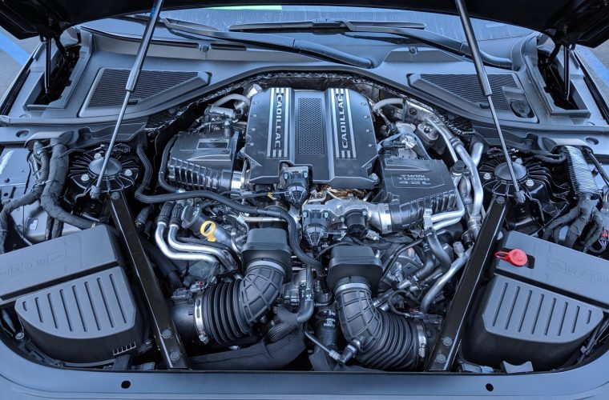

Engine
The heart of the car. Cadillac gas models use V6 and V8 engines, many with direct injection and turbocharging, for strong, smooth power.
Watch for:
- Check engine light
- Rough idle or misfires
- Oil leaks or burning smell

Cadillacs are engineered with advanced technology and precision parts, so they need a shop that understands them. At YOUR SHOP NAME, we diagnose, repair, and maintain Cadillac vehicles to keep them performing the way they were built to.
Cadillac is General Motors' luxury division and one of the oldest automotive brands in the world. Founded in Detroit in 1902, it was named after Antoine de la Mothe Cadillac, the French explorer who founded the city. Early on, the company earned a reputation for precision manufacturing and interchangeable parts, and it has been associated with innovation and prestige ever since.
Today, Cadillac's lineup spans refined gas-powered sedans, performance-tuned V-Series models, full-size luxury SUVs, and a growing range of all-electric vehicles. That variety is great for drivers, but it also means every model has its own systems, software, and service needs.
Why that matters for repairs: modern Cadillacs combine mechanical hardware with sophisticated electronics. Accurate diagnosis and quality parts make the difference between a lasting fix and a repeat visit.
Models we service: CT4, CT5, XT4, XT5, XT6, Escalade, Lyriq, Optiq, Vistiq, and older models too.
Here's a look at the major systems in a Cadillac, what each one does, and the warning signs that mean it's time to bring your car in. These are the systems our technicians inspect and repair most often.

The heart of the car. Cadillac gas models use V6 and V8 engines, many with direct injection and turbocharging, for strong, smooth power.
Watch for:

Multi-speed automatic transmissions and available all-wheel drive send power to the road. Regular fluid service helps them last.
Watch for:

Shocks, struts, control arms, and bushings deliver Cadillac's signature smooth ride. Many models use adaptive magnetic ride systems that need specialized service.
Watch for:

Pads, rotors, calipers, brake lines, and ABS components work together to stop a heavy, powerful car safely, especially on performance trims.
Watch for:

Electric power steering, the steering rack, and tie rods keep handling precise. Alignment keeps everything tracking straight.
Watch for:

Radiator, water pump, thermostat, and hoses keep engine temperatures in range. EVs also have liquid cooling for the battery and electronics.
Watch for:

The battery, alternator, starter, wiring, and control modules power everything from ignition to infotainment. A weak battery can cause surprising electronic glitches.
Watch for:

On models like the Lyriq, Optiq, and Vistiq, the high-voltage battery pack, charge port, onboard charger, and electric drive units replace a traditional engine and transmission.
Watch for:

Cameras, radar, and sensors support safety and driver-assistance features, working alongside the infotainment screen and digital cluster. They often need calibration after repairs.
Watch for:

Catalytic converters, oxygen sensors, and mufflers reduce emissions and noise while supporting engine performance and fuel economy.
Watch for:

Compressor, condenser, blower, and climate controls (plus heated and ventilated seats) keep the cabin comfortable year-round.
Watch for:

The right tires, correct pressure, and proper alignment protect ride quality, handling, and safety, and keep sensors like TPMS accurate.
Watch for:
Features and components vary by model and year. Contact us with your VIN and we'll confirm exactly what your Cadillac has.
Book an appointment or ask us a question. We'll inspect your vehicle, explain what it needs, and give you a clear quote before any work begins.
Call (555) 555-5555 Request an Appointment Visit Cadillac.com ↗